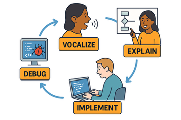
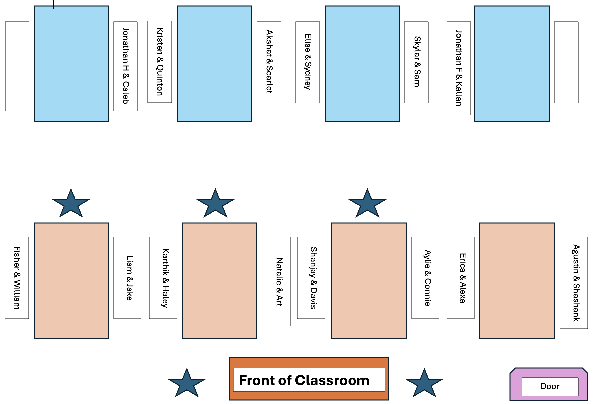

Using lubridate to Work with Dates
Thursday, October 16
Today we will…
- Reminder About Lab 3 / Challenge 3 Revisions
- Reminder About Lab 4 Peer Code Review
- Week 6 Layout
- What to Expect
- Midterm Portfolios
- How to Get Started
- New Material
- Working with Date & Time Variables
- PA 5.2: Jewel Heist
Lab 3 / Challenge 3 Revisions
Lab 3 / Challenge 3 Revisions
Revisions are due by Friday
Any problem receiving a “Growing” can be revised and submitted for additional feedback.
Revisions must be accompanied by reflections on how your learning progressed.
Don’t forget to complete your Lab 4 code review!
Don’t forget to complete your Lab 4 code review!
Make sure your feedback follows the code review guidelines.
Insert your review into the comment box!
Week 6 Layout
Week 6 Layout
- Tuesday: Version Control
- Live Code / Troubleshoot Pushing to GitHub
- Midterm Portfolio Work Session
- Thursday: Midterm Portfolio Work Session
- Midterm Portfolios Due Sunday, October 26
What to Expect
You will create a Midterm Portfolio, with code covering the learning targets we have covered thus far in the course.
- Your code will be pulled from your Lab and Challenge assignments.
- You will write reflections on how you’ve:
- revised your thinking
- extended your thinking
- supported and collaborated with your peers
Getting Started
- Follow these directions to install
gitand sign-up for a GitHub account - Follow these directions to fork a copy of the Final Portfolio repository.
- Start finding excerpts of code you wrote for the Labs or Challenges that fit each learning target.
- Sign-up for a time to meet with Dr. T during Week 7
Date + Time Variables
Why are dates and times tricky?
When parsing dates and times, we have to consider complicating factors like…
- Daylight Savings Time.
- One day a year is 23 hours; one day a year is 25 hours.
- Some places use it, some don’t.
- Leap years – most years have 365 days, some have 366.
- Time zones.
lubridate
Convert a date-like variable (“May 8, 1995”) to a date or date-time object.
Find the weekday, month, year, etc from a date-time object.
Convert between time zones.
Note
The lubridate package installs and loads with the tidyverse.
Creating date-time Objects
Common Mistake with Dates
What’s wrong here?
Make sure you use quotes!
- 2,015 seconds \(\approx\) 33.5 minutes
Extracting date-time Components
Subtraction with date-time Objects
Doing subtraction gives you a difftime object.
difftime objects do not always have the same units – it depends on the scale of the objects you are working with.
How old am I?
Durations and Periods
Durations will always give the exact number of seconds.
Durations and Periods
Intervals of Time
Suppose American Airlines requires members to travel within 4 weeks before or after their birthday to earn a “Birthday Bonus Flight.”
Time Zones…
…are complicated!
Specify time zones in the form:
- {continent}/{city} – “America/Denver”, “Africa/Nairobi”
- {ocean}/{city} – “Pacific/Auckland”
Time Zones
You can change the time zone of a date in two ways:
with_tz()
Common Mistake with Dates
When you read data in or create a new date-time object, the default time zone (if not specified) is UTC (Universal Time Coordinated)*.
*UTC is the same as GMT (Greenwich Mean Time) which is where Iceland is located
PA 5.2: Jewel Heist
This activity will require knowledge of:
- Converting time zones
- Extracting components of a date
- Filtering based on date components
- Making intervals of time
- Filtering values that fall into an interval
- Finding the duration between two dates
- Modulus division
None of us have all these abilities. Each of us has some of these abilities.
Pair Programming Expectations
External Resources
During the Practice Activity, you are not permitted to use Google or ChatGPT for help.
You are permitted to use:
- today’s handout,
- the course slides,
- the
lubridatecheatsheet, and - the course textbook
Submission
Submit the name of the thief to the Canvas Quiz.
- Each person will input the full name of the thief into the PA 5.2 quiz.
- The person who last occupied the role of Computer will submit the link to your group’s Colab notebook.
- Please don’t forget to put your names at the top!
5-minute break
Team Assignments - 9am

The partner who has broken the most bones starts as the Talker!
Team Assignments - 12pm

The partner who has broken the most bones starts as the Talker!